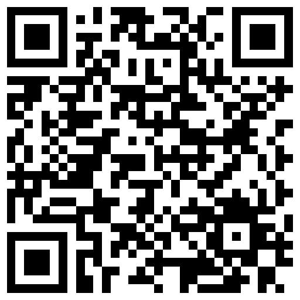

Seu computador responde à sua mão
Controle o cursor, execute cliques e acione comandos com gestos naturais. Uma webcam é tudo o que o sistema precisa.
O projeto
Uma interface gestual simples, construída sobre visão computacional.
A webcam identifica a posição da mão. O sistema interpreta a postura e converte a intenção em eventos reais do sistema operacional, como mover, clicar, arrastar e avançar slides.
Tudo acontece localmente, sem conta, servidor externo ou envio do vídeo para a nuvem. O projeto é aberto e pode ser ajustado para diferentes câmeras, telas e formas de interação.
Ler o guia completo
FeitoBR / perfil
24.06.2026
“Por que continuamos interagindo com computadores quase da mesma forma há décadas?”
A pergunta que abriu caminho para o AI Virtual Mouse.
- 18 anos
- criador
- Osasco
- origem
- PyPI
- disponível
Acessibilidade
Ergonomia
Interação
Quando a mão vira mouse: o jovem brasileiro que quer reinventar a forma de usar o computador.
A FeitoBR conta como Guilherme Moraes Franco transformou uma inquietação sobre interfaces tradicionais em uma ferramenta de visão computacional. A reportagem percorre a origem do projeto em Osasco, o trabalho para tornar os gestos naturais e suas possibilidades em acessibilidade, ergonomia e novas formas de interação.
Ler matéria completaTecnologia
A tecnologia certa em cada etapa.
Seis componentes formam um pipeline local, rápido e fácil de evoluir.
Python
AplicaçãoOrganiza o ciclo de execução e conecta todos os módulos do projeto.
OpenCV
CapturaLê a webcam continuamente e prepara cada frame para análise.
MediaPipe Hands
RastreamentoIdentifica 21 pontos da mão e entrega sua posição em tempo real.
Motor de gestos + One Euro Filter
InterpretaçãoReconhece a intenção e estabiliza o movimento sem adicionar atraso perceptível.
PyAutoGUI
ControleReproduz movimento, cliques e arrasto no sistema operacional.
PySide6 + ModernGL
OverlayExibe a mão holográfica opcional sobre o desktop.
Gestos
Cinco gestos. Comandos diretos.
O vocabulário visual foi desenhado para ser fácil de memorizar e difícil de acionar por acidente.

MOVE
Mão aberta · mover
Quatro dedos levantados controlam o cursor. O filtro adaptativo reduz tremores sem deixar o movimento lento.

CLICK / DRAG
Pinça · clicar ou arrastar
Encoste indicador e polegar para clicar. Sustente a pinça para iniciar o arrasto e solte para concluir.
RIGHT_CLICK
Pinça com o médio · menu
Encoste o dedo médio no polegar, mantendo o indicador afastado, para abrir o menu de contexto.

DOUBLE_CLICK
Sinal de paz · abrir
Mostre indicador e médio para disparar dois cliques com intervalo controlado pelo sistema.

PAUSE
Punho fechado · pausar
Congele o cursor enquanto reposiciona a mão. Retirar a mão do quadro também interrompe o controle.
Demonstração
Como é usar o AI Virtual Mouse Controller.
Controle de cursor, desenho, apresentações e navegação executados por gestos em tempo real.
Instalação
Instale e execute em poucos minutos.
Compatível com Python 3.11 a 3.13. Assista ao passo a passo ou copie os comandos para o seu sistema.
pip install ai-virtual-mouse-controller
avmcgit clone https://github.com/ognistie/ai-virtual-mouse-controller.git
cd ai-virtual-mouse-controller
py -m pip install -r requirements.txt
py main.pygit clone https://github.com/ognistie/ai-virtual-mouse-controller.git
cd ai-virtual-mouse-controller
python3 -m pip install -r requirements.txt
python3 main.pyCódigo aberto
Experimente, adapte e contribua.
O projeto é distribuído sob licença MIT. Issues, testes e pull requests ajudam a tornar a interação gestual mais precisa e acessível.

github.com/ognistie
Escaneie o QR Code ou acesse diretamente pelo navegador.